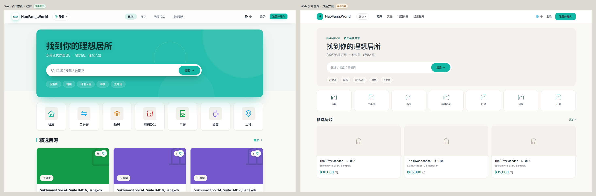
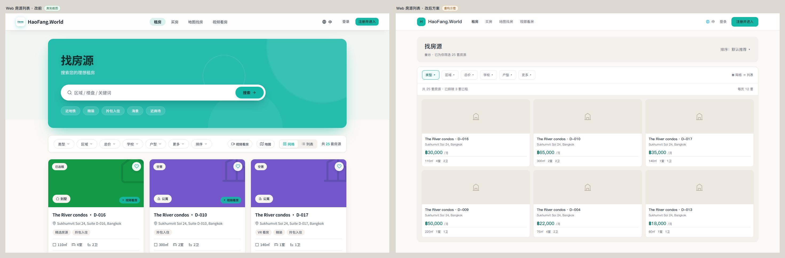
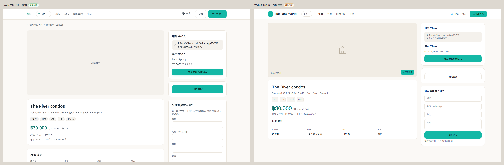
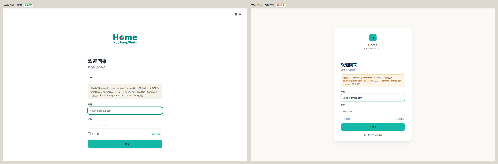
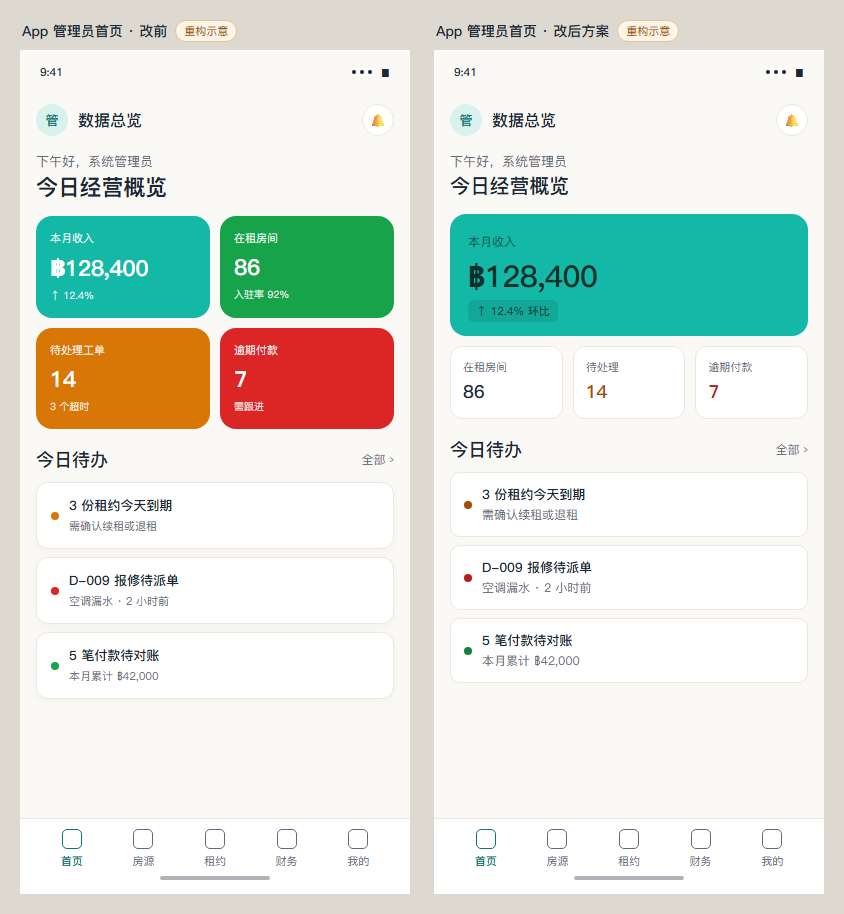
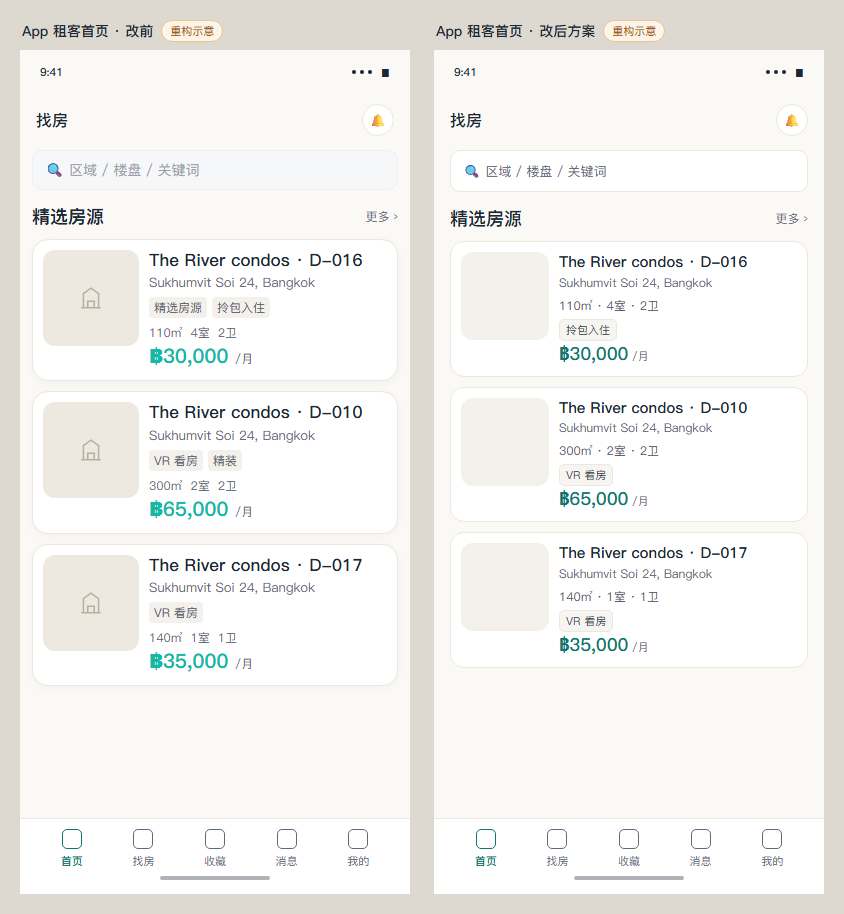
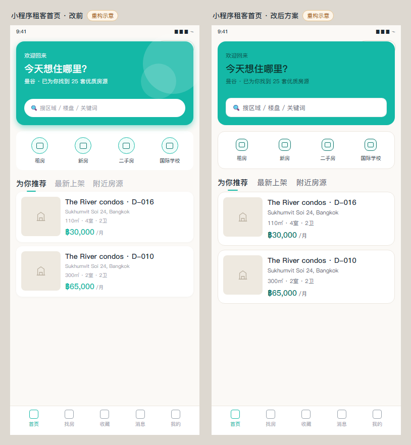
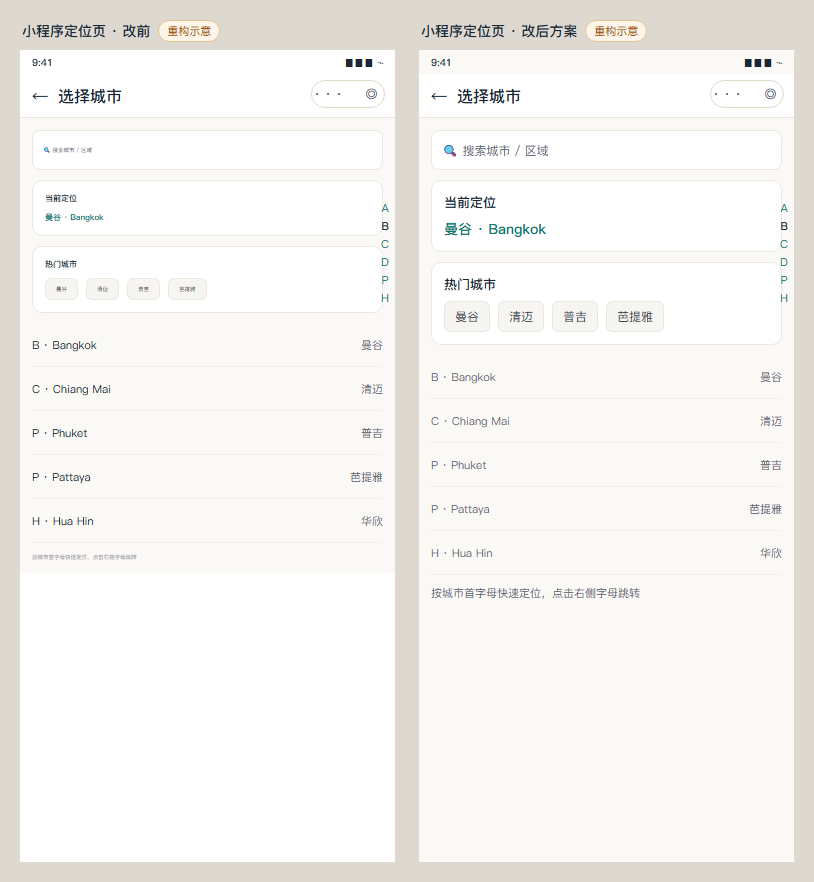

01
Web 公开首页
Hero 去装饰圆，CTA 成为唯一焦点
改前真实截图改后示意



02
Web 房源列表
筛选栏与列表合并为单一容器，去双层阴影与 40 条分割线
改前真实截图改后示意



03
Web 房源详情
清掉蓝紫 / 橙色渐变，字重从 800 收敛到 700
改前真实截图改后示意



04
Web 登录页
给表单一个清晰边界，测试账号提示改用语义色
改前真实截图改后示意

具体改动
- 真实页面是单列居中，不存在旧 CSS 的左右分屏；改后以“暖色画布 + 白色卡片”重建边界。
- 卡片 460px、圆角 20、1px 描边与柔和阴影，表单不再是悬浮白块。
- 测试账号提示改用 --state-warning-soft / --state-warning-light / --state-warning-ink，替换写死的米黄三色。
- 输入框高度 44、圆角 10；主按钮文字改深墨 #0b2f2b（5.80:1）。


05
App 管理员首页
四张满饱和 KPI 卡 → 1 张主卡 + 白底语义色数字
改前重构示意改后示意



06
App 租客首页
标题与价格主次分离，卡片描边 / 阴影二选一
改前重构示意改后示意



07
小程序租客首页
深墨字替白字，--ink-2 替 --ink-3，磁贴尺寸收敛
改前重构示意改后示意



08
小程序定位页
5.5–8px 字号全部提升到 ≥12px
改前重构示意改后示意



落地顺序建议
- 第 1 步：三端令牌层（小程序 --primary-foreground / --ink-3 / 字号阶梯；App 冷灰与状态 ink；Web foreground 与 Modal 圆角）——改完后对比度问题一次清零。
- 第 2 步：Web 首页、列表、详情、登录 + App 管理员首页（曝光最高，收益最大）。
- 第 3 步：App 租客首页、小程序首页与定位页（改版节奏与列表信息密度）。
- 第 4 步：其余列表 / 详情 / 表单按同一套令牌做批量替换与状态态收敛。